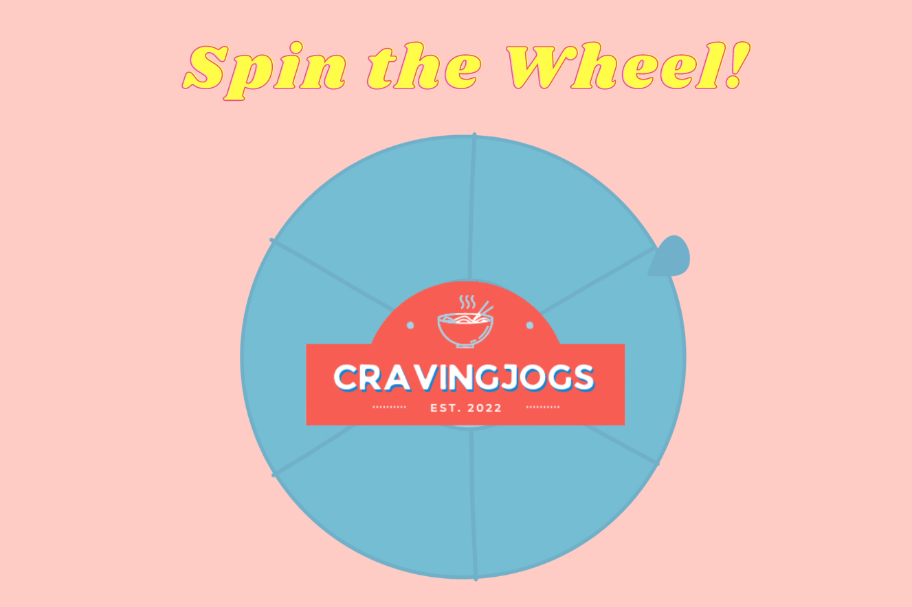

Cravingjogs WebGIS
WebGIS can be built by the integration of applications such as OpenLayers, GeoServer, and PostgreSQL+GIS.
Cravingjogs Map
Craving some foods? Here are our recommendations! Make sure you don't miss anything good here.
Cravingjogs Database

Meet Today's Food! This will help you to decide what food will you eat. Make sure it's your favorite!
Wanna input yours?